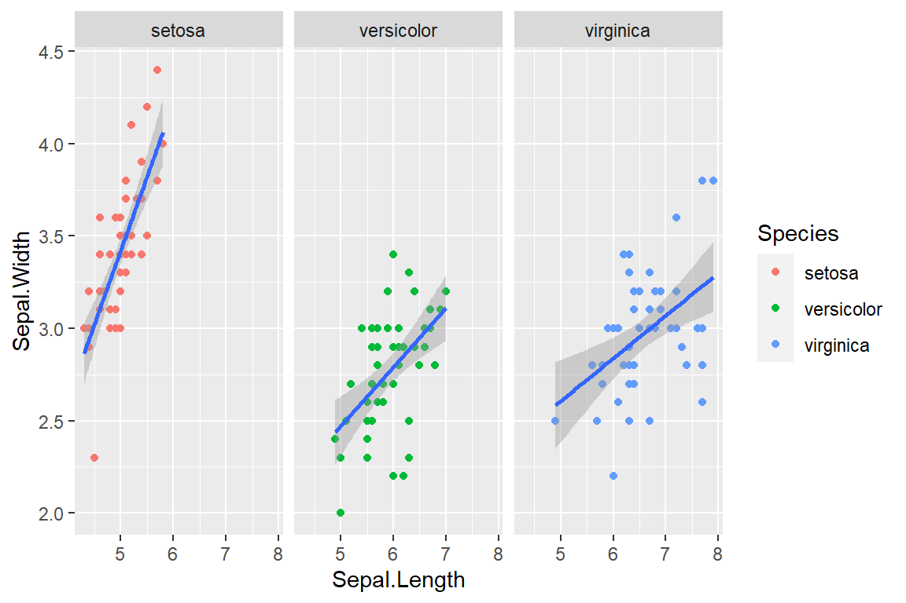
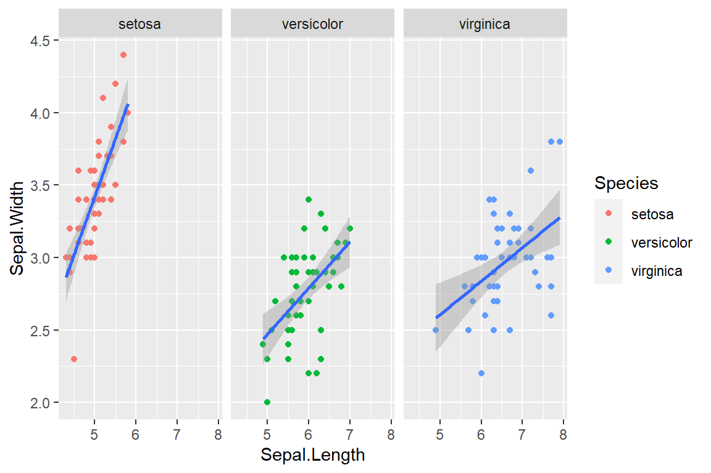
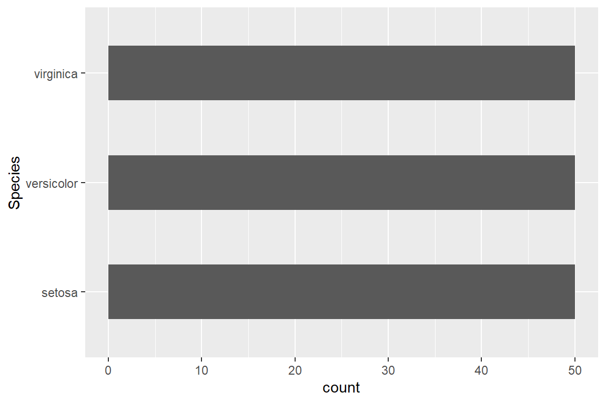
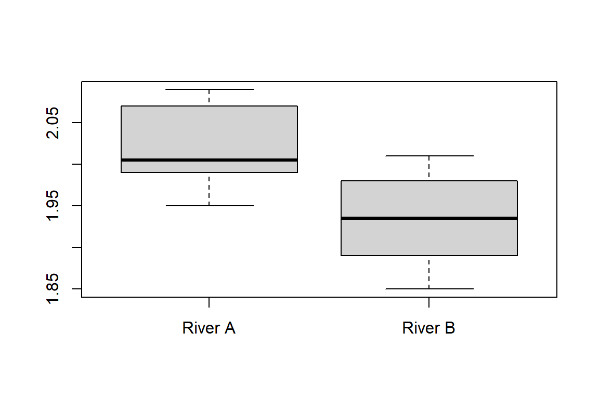
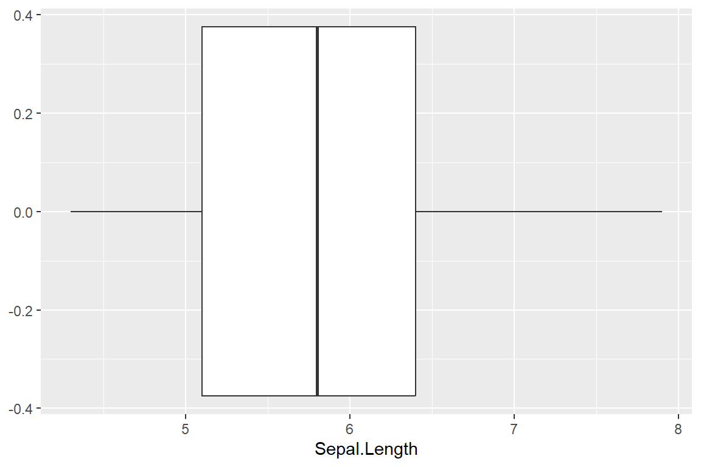
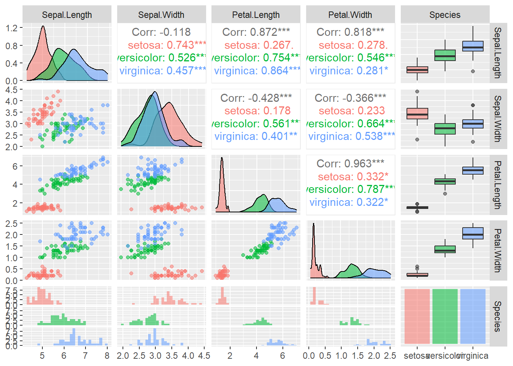

library(ggplot2)
ggplot(iris, aes(x = Sepal.Length, y = Sepal.Width)) +
geom_point(aes(x = Sepal.Length, y = Sepal.Width, color = Species)) +
geom_smooth(method = "lm") + facet_wrap(~ Species)
R in statistics (Fundamental)
üëâüèªClick to enter the ENV222 note section
library(ggplot2)
ggplot(iris, aes(x = Sepal.Length, y = Sepal.Width)) +
geom_point(aes(x = Sepal.Length, y = Sepal.Width, color = Species)) +
geom_smooth(method = "lm") + facet_wrap(~ Species)
library(ggplot2)
ggplot(iris) + geom_bar(aes(Species), width = 0.5) + coord_flip()
library(ggplot2)
ggplot(iris) + geom_histogram(aes(Sepal.Length))
# R built-in way
River_A <- c(2, 1.95, 1.99, 2.08, 1.99, 1.95, 2.03, 2.09, 2.07, 2.01)
River_B <- c(1.85, 1.94, 1.87, 1.89, 1.91, 1.93, 2.01, 2, 1.96, 1.98)
boxplot(River_A, River_B, names = c('River A','River B'))
# ggplot2 way
library(ggplot2)
ggplot(iris) + geom_boxplot(aes(Sepal.Length))
# install.packages("GGally")
library(GGally)
ggpairs(iris, aes(colour=Species, alpha=0.5))
ggsave("df_plot.pdf") # Save graphs# Random sampling
df <- data.frame(x = c(1, 2, 3, 4, 5, 6, 7, 8, 9, 10),
y = c('a', 'b', 'c', 'd', 'e', 'f', 'g', 'h', 'i' ,'j'))
sample(df$y[df$x > 5], 2)[1] "g" "i"sample(df$y[df$x <= 5], 2)[1] "e" "a"x=c(1,2,NA,4)
mean(x, na.rm = TRUE) # Remove NA within a function[1] 2.333333x <- x[!is.na(x)] # Adjust dataset (multidimensional data filtering) selected an undefined column. Need to add ', !is.na(***)' after it.
x <- x[x != boxplot(x, plot=FALSE)$out] # Excluded outliers from the datasetcor_coe <- function(x, y){
N <- length(x)
co <- 1 / (N - 1) * sum((y - mean(y)) * (x - mean(x)))
sx <- sd(x)
sy <- sd(y)
co / (sx * sy)
}e.g. Toss a coin for “n” times, “x” is the frequency of head
x <- 2
n <- 2
p <- 0.5
dbinom(x, size = n, prob = p) # Same as choose(n, x) * p^x * (1-p)^(n-x)[1] 0.25Known population mean and population variance
x <- c(24, 36, 44, 35, 44, 34, 29, 40, 39, 43, 41, 32, 33, 29, 29, 43, 25, 39, 25, 42,
29, 22, 22, 25, 14, 15, 14, 29, 25, 27, 22, 24, 18, 17)
mu <- 29
sd_p <- 9
x_bar <- mean(x)
se <- sd_p / sqrt(length(x))
(z_score <- (x_bar - mu) / se)[1] 0.4382742(z_critical <- qnorm(1 - 0.05))[1] 1.644854(p_value <- pnorm(z_score))[1] 0.6694062Known population mean but unknown population variance
mu <- 100
x <- c(91, 100, 70, 87, 104, 92, 104, 88, 72, 119)
t.test(x, mu = mu , alternative = "less", conf.level = 0.05) # One-tailed
One Sample t-test
data: x
t = -1.5478, df = 9, p-value = 0.07804
alternative hypothesis: true mean is less than 100
5 percent confidence interval:
-Inf 84.05409
sample estimates:
mean of x
92.7 mu <- 0.02
x <- c(0.011, 0.021, 0.001, 0.007, 0.031, 0.023, 0.026, 0.019)
t.test(x, mu = 0.02, alternative = "two.sided", conf.level = 0.1) # Two-tailed
One Sample t-test
data: x
t = -0.73012, df = 7, p-value = 0.489
alternative hypothesis: true mean is not equal to 0.02
10 percent confidence interval:
0.01690656 0.01784344
sample estimates:
mean of x
0.017375 x1 <- c(24.58, 22.09, 23.70, 18.89, 22.02, 28.71, 24.44, 20.91, 23.83, 20.83)
x2 <- c(21.61, 19.06, 20.72, 15.77, 19, 25.88, 21.48, 17.85, 20.86, 17.77)
t.test(x1, x2, var.equal = TRUE, alternative = "two.sided", mu = 0) # Two samples
Two Sample t-test
data: x1 and x2
t = 2.4396, df = 18, p-value = 0.02528
alternative hypothesis: true difference in means is not equal to 0
95 percent confidence interval:
0.4164695 5.5835305
sample estimates:
mean of x mean of y
23 20 The significance of testing the difference between two sets of values, where mu1 = mu2 = mu3 = mu4…
x1 <- c(24.58, 22.09, 23.70, 18.89, 22.02, 28.71, 24.44, 20.91, 23.83, 20.83)
x2 <- c(21.61, 19.06, 20.72, 15.77, 19, 25.88, 21.48, 17.85, 20.86, 17.77)
var.test(x2, x1, ratio = 1, alternative = "two.sided", conf.level = 0.95) # Two set of data "x1, x2" ANOVA calculation
F test to compare two variances
data: x2 and x1
F = 1.0586, num df = 9, denom df = 9, p-value = 0.9338
alternative hypothesis: true ratio of variances is not equal to 1
95 percent confidence interval:
0.2629492 4.2620464
sample estimates:
ratio of variances
1.058632 dtf <- data.frame(before = c(198, 201, 210, 185, 204, 156, 167, 197, 220, 186),
one = c(194, 203, 200, 183, 200, 153, 166, 197, 215, 184),
two = c(191, 200, 192, 180, 195, 150, 167, 195, 209, 179),
three = c(188, 196, 188, 178, 191, 145, 166, 192, 205, 175))
rownames(dtf) <- LETTERS[1:10]
dtf2 <- stack(dtf)
names(dtf2) <- c("w", "level")
w_aov <- aov(w ~ level, data = dtf2)
summary(w_aov) Df Sum Sq Mean Sq F value Pr(>F)
level 3 569 189.7 0.577 0.634
Residuals 36 11841 328.9 dtf2$subject <- rep(LETTERS[1:10], 4)
w_aov2 <- aov(w ~ level + Error(subject/level), data = dtf2)
summary(w_aov2) # One-way ANOVA, judging significance based on the '*' symbol after Pr(>F)
Error: subject
Df Sum Sq Mean Sq F value Pr(>F)
Residuals 9 11632 1292
Error: subject:level
Df Sum Sq Mean Sq F value Pr(>F)
level 3 569.1 189.69 24.48 7.3e-08 ***
Residuals 27 209.2 7.75
---
Signif. codes: 0 '***' 0.001 '**' 0.01 '*' 0.05 '.' 0.1 ' ' 1dtf <- data.frame(w = c(90,95,100,75,78,90,120,125,130,100,118,112,125,130,135,118,125,132),
diet = rep(c("Diet1", "Diet2", "Diet3"), each = 6),
gender = rep(c("Male", "Female"), each = 3))
aov_wg <- aov(w ~ diet * gender, data = dtf)
summary(aov_wg) # Two-way ANOVA, judging significance based on the '*' symbol after Pr(>F) Df Sum Sq Mean Sq F value Pr(>F)
diet 2 5061 2530.5 56.026 8.19e-07 ***
gender 1 578 578.0 12.797 0.0038 **
diet:gender 2 91 45.5 1.007 0.3941
Residuals 12 542 45.2
---
Signif. codes: 0 '***' 0.001 '**' 0.01 '*' 0.05 '.' 0.1 ' ' 1Check if there is a correlation between A and B
dtf <- data.frame(colour = c("red", "white", "pink"), # One-category X^2 test
observed = c(72, 63, 125)) # H0:The ratio of red to white to pink is 1:1:2
dtf$expected <- sum(dtf$observed) * c(1, 1, 2) / 4
df <- nrow(dtf) - 1
(chi_sq_score <- sum((dtf$observed - dtf$expected)^2 / dtf$expected))[1] 1.007692(critical_point <- qchisq(0.05, df, lower.tail = FALSE))[1] 5.991465(p_value <- pchisq(chi_sq_score, df, lower.tail = FALSE))[1] 0.6042023dtf <- data.frame(Endangered = c(162, 143, 38, 17, 45), # Multiple-category X^2 test
Threatened = c( 18, 16, 19, 10, 32),
row.names = c('Mammals', 'Birds', 'Reptiles', 'Amphibians', 'Fish'))
chisq.test(dtf) # Yates’ correction
Pearson's Chi-squared test
data: dtf
X-squared = 56.503, df = 4, p-value = 1.573e-11# Hypothesis test
dtf0 <- read.csv("data/students_env221.csv")
dtf <- dtf0[dtf0$SHOE != boxplot(dtf0$SHOE, plot=FALSE)$out & !is.na(dtf0$SHOE), ] # Excluded NA and outliers.
env_lm <- lm(SHOE ~ HEIGHT, data = dtf)
env_lm$coefficients # Intercept & Slope(Intercept) HEIGHT
-8.6016669 0.2835591 # Hypothesis test about correlation (continue)
(r <- cor(dtf$HEIGHT, dtf$SHOE)) # correlation coefficient[1] 0.8793958r ^ 2 # coefficient of determination. When R^2 is closer to 1, it means that the related equation is more referential; The closer to 0, the less referential.[1] 0.7733371n <- nrow(dtf)
(t_score <- r * sqrt((n-2) / (1 - r ^ 2)))[1] 13.44721(t_critical <- qt(0.975, df = n - 2))[1] 2.005746(p_value <- pt(t_score, df = n - 2, lower.tail = FALSE) * 2)[1] 1.020629e-18summary(env_lm) # Quick method, where R-squared represents the correlation coefficient.
Call:
lm(formula = SHOE ~ HEIGHT, data = dtf)
Residuals:
Min 1Q Median 3Q Max
-2.7527 -0.8123 -0.0363 1.0535 3.4117
Coefficients:
Estimate Std. Error t value Pr(>|t|)
(Intercept) -8.60167 3.58524 -2.399 0.02 *
HEIGHT 0.28356 0.02109 13.447 <2e-16 ***
---
Signif. codes: 0 '***' 0.001 '**' 0.01 '*' 0.05 '.' 0.1 ' ' 1
Residual standard error: 1.467 on 53 degrees of freedom
Multiple R-squared: 0.7733, Adjusted R-squared: 0.7691
F-statistic: 180.8 on 1 and 53 DF, p-value: < 2.2e-16# Hypothesis test about slope (continue)
summary(env_lm) # Quick method, where the HEIGHT column represents the slope and includes t-scores and p-values.
Call:
lm(formula = SHOE ~ HEIGHT, data = dtf)
Residuals:
Min 1Q Median 3Q Max
-2.7527 -0.8123 -0.0363 1.0535 3.4117
Coefficients:
Estimate Std. Error t value Pr(>|t|)
(Intercept) -8.60167 3.58524 -2.399 0.02 *
HEIGHT 0.28356 0.02109 13.447 <2e-16 ***
---
Signif. codes: 0 '***' 0.001 '**' 0.01 '*' 0.05 '.' 0.1 ' ' 1
Residual standard error: 1.467 on 53 degrees of freedom
Multiple R-squared: 0.7733, Adjusted R-squared: 0.7691
F-statistic: 180.8 on 1 and 53 DF, p-value: < 2.2e-16(t_critical <- qt(0.975, df = n - 2))[1] 2.005746# Hypothesis test about intercept (continue)
summary(env_lm) # Quick method, the intercept column is both the slope, including t-scores and p-values.
Call:
lm(formula = SHOE ~ HEIGHT, data = dtf)
Residuals:
Min 1Q Median 3Q Max
-2.7527 -0.8123 -0.0363 1.0535 3.4117
Coefficients:
Estimate Std. Error t value Pr(>|t|)
(Intercept) -8.60167 3.58524 -2.399 0.02 *
HEIGHT 0.28356 0.02109 13.447 <2e-16 ***
---
Signif. codes: 0 '***' 0.001 '**' 0.01 '*' 0.05 '.' 0.1 ' ' 1
Residual standard error: 1.467 on 53 degrees of freedom
Multiple R-squared: 0.7733, Adjusted R-squared: 0.7691
F-statistic: 180.8 on 1 and 53 DF, p-value: < 2.2e-16(t_critical <- qt(0.025, df = n - 1))[1] -2.004879# Visualization (another example)
X <- c(4.69, 4.43, 4.04, 4.06, 3.89, 3.93, 3.49, 3.4, 2.97, 2.47, 2.22, 2.13)
Y <- c(15.6, 15.4, 14.9, 14.5, 13.5, 13.4, 12.7, 12.3, 11.4, 10.5, 10.2, 10.0)
dtf <- data.frame(X, Y)
XY_lm <- lm(Y ~ X, data = dtf)
plot(x = dtf$X, y = dtf$Y, xlab = "X(unit)", ylab = "Y(unit)", las = 1, pch = 16)
abline(XY_lm, col = "blue")
mean_X <- mean(dtf$X, na.rm = TRUE)
mean_Y <- mean(dtf$Y, na.rm = TRUE)
points(x = mean_X, y = mean_Y, col = "red", cex = 3)
abline(h = mean_Y, v = mean_X, col = "red", lty = 2)
R version 4.2.3 (2023-03-15 ucrt)
Platform: x86_64-w64-mingw32/x64 (64-bit)
Running under: Windows 10 x64 (build 19044)
Matrix products: default
locale:
[1] LC_COLLATE=Chinese (Simplified)_China.utf8
[2] LC_CTYPE=Chinese (Simplified)_China.utf8
[3] LC_MONETARY=Chinese (Simplified)_China.utf8
[4] LC_NUMERIC=C
[5] LC_TIME=Chinese (Simplified)_China.utf8
attached base packages:
[1] stats graphics grDevices utils datasets methods base
other attached packages:
[1] GGally_2.1.2 ggplot2_3.4.2
loaded via a namespace (and not attached):
[1] Rcpp_1.0.10 plyr_1.8.8 RColorBrewer_1.1-3 pillar_1.9.0
[5] compiler_4.2.3 tools_4.2.3 digest_0.6.31 jsonlite_1.8.4
[9] evaluate_0.20 lifecycle_1.0.3 tibble_3.2.1 gtable_0.3.3
[13] nlme_3.1-162 lattice_0.20-45 mgcv_1.8-42 pkgconfig_2.0.3
[17] rlang_1.1.0 Matrix_1.5-3 cli_3.6.1 rstudioapi_0.14
[21] yaml_2.3.7 xfun_0.37 fastmap_1.1.0 withr_2.5.0
[25] dplyr_1.1.0 knitr_1.42 generics_0.1.3 vctrs_0.6.2
[29] htmlwidgets_1.6.2 grid_4.2.3 tidyselect_1.2.0 reshape_0.8.9
[33] glue_1.6.2 R6_2.5.1 fansi_1.0.3 rmarkdown_2.21
[37] farver_2.1.1 magrittr_2.0.3 scales_1.2.1 htmltools_0.5.4
[41] splines_4.2.3 colorspace_2.1-0 labeling_0.4.2 utf8_1.2.3
[45] munsell_0.5.0